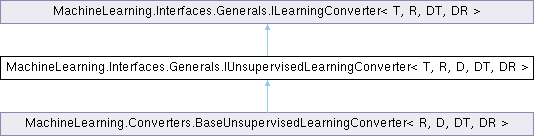

Шаблон интерфейса MachineLearning.Interfaces.Generals.IUnsupervisedLearningConverter< T, R, D, DT, DR >
Интерфейс конвертора данных в данные для предсказания без учителя и наоборот. Подробнее...
Граф наследования:MachineLearning.Interfaces.Generals.IUnsupervisedLearningConverter< T, R, D, DT, DR >:

Открытые члены | |
| IEnumerable< T > | FitConvertData (IEnumerable< D > data) |
| Адаптирует конвертацию данных под данные для предсказания. | |
 Открытые члены унаследованные от MachineLearning.Interfaces.Generals.ILearningConverter< T, R, DT, DR > Открытые члены унаследованные от MachineLearning.Interfaces.Generals.ILearningConverter< T, R, DT, DR > | |
| T | ConvertData (DT data) |
| Конвертирует входные данные под входные данные для предсказания. | |
| DR | ConvertPredicted (R predicted) |
| Конвертирует предсказанное значение в выходное значение. | |
Подробное описание
Интерфейс конвертора данных в данные для предсказания без учителя и наоборот.
Наследует ILearningConverter<T, R, DT, DR>.
- Параметры шаблона
-
T Тип входных данных для предсказания. R Тип выходных данных для предсказания. D Тип данных. DT Тип входных данных. DR Тип выходных данных.
См. определение в файле IUnsupervisedLearningConverter.cs строка 14
Методы
◆ FitConvertData()
| IEnumerable< T > MachineLearning.Interfaces.Generals.IUnsupervisedLearningConverter< T, R, D, DT, DR >.FitConvertData | ( | IEnumerable< D > | data | ) |
Адаптирует конвертацию данных под данные для предсказания.
- Аргументы
-
data Данные.
- Возвращает
- Возвращает конвертированные входных данных для предсказания.
Замещается в MachineLearning.Converters.BaseUnsupervisedLearningConverter< R, D, DT, DR >.
Создано системой